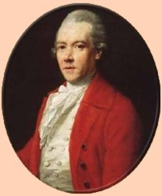

|
by Stefan Bielinski Philip Livingston was born in Albany in January 1716. He was the fourth son born to Philip Livingston and Catharina Van Brugh Livingston. He grew up in a very large family his father's Albany townhouse on the Elm Tree Corner in Albany and at the family estate called Clermont down in the Hudson Valley.  He graduated from Yale College in 1737. He began a business career in New York City and soon was involved in a number of Manhattan-based civic organizations. He was named among the heirs in the will filed by his father in July 1748. This son was left the house he lived in and his father's store in New York. He married Christina Ten Broeck in 1740. The marriage produced three children between 1741 and 1745. The couple resided in Manhattan and had a farm in Brooklyn. However, he maintained an Albany presence and was elected assistant alderman in the first ward in 1743, 1744, and 1745. He also added to his Albany real estate holdings with his first ward house still on the city assessment rolls in 1767. He was a New York City alderman during the 1750s and a member of the provincial Assembly for Manhattan from 1759 to 1768. On the eve of the Revolution, he was a prominent member of the conservative colonial opposition to new British restrictions and taxes! After serving on a number of New York City-based resistance committees, he was elected to the Continental Congress in 1774. As a delegate to the Second Continental Congress in 1776, he signed the Declaration of Independence. Suffering from dropsy, his health declined. In the Spring of 1778, he visited friends in Albany for the last time. Although he took his seat in Congress in May, his condition worsened. Philip Livingston died in York, Pennsylvania on June 12, 1778. His name still is legendary in Albany today. Livingston Avenue and Philip Livingston Magnet Academy are named for him!
The first portrait appears unattributed
on a family
website. The second image was painted about 1771 when the subject
was fifty-five years old. It is attributed to Abraham Delanoy and
hangs today at the Clermont State Historic Site. It is described
by Ruth Piwonka in A Portrait of Livingston Manor, 1686-1850
(1986), pp.52-53.
first posted: privaely 2002; last revised 12/20/12 |